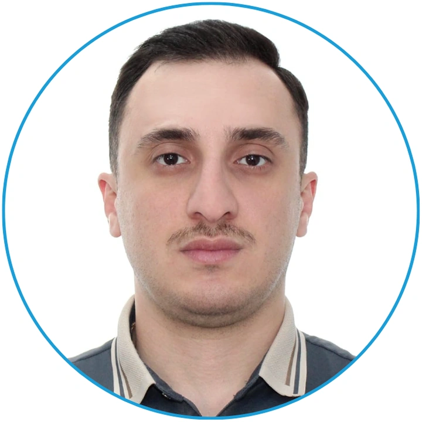
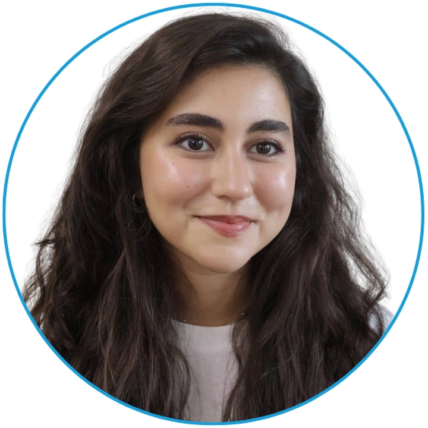
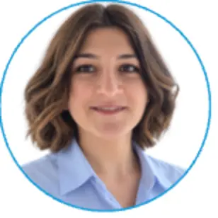
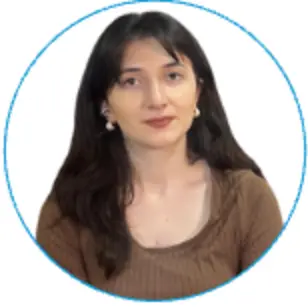

İmkanlara birbaşa çıxış məhduddur
Bir çox tələbə aktiv tədqiqatçılara, laboratoriyalara və real layihələrə aparan formal kanallara çıxış tapa bilmir.
Dünyanın hər yerində çalışan azərbaycanlı tədqiqatçıları, tələbələri və elm həvəskarlarını bir araya gətirən açıq platforma.
Bizim manifestimiz
Güclü elmi icma bilik paylaşımı və davamlı əməkdaşlıqla yaranır.
Haqqımızda
Sərhədləri aşan, biliyi paylaşan və Azərbaycan elminin gələcəyini birlikdə quran tədqiqatçılar şəbəkəsiyik.
Azərbaycan Tədqiqat Cəmiyyəti (ARS) müxtəlif elm sahələrindən olan azərbaycanlı alim və tələbələr arasında əlaqə yaradan qeyri-kommersiya təşəbbüsüdür.
Məqsədimiz açıq dialoq, mentorluq və multidissiplinar əməkdaşlıq üçün əlçatan mühit formalaşdırmaqdır.
Bir çox tələbə aktiv tədqiqatçılara, laboratoriyalara və real layihələrə aparan formal kanallara çıxış tapa bilmir.
Fərqli sahələrdən insanları bir araya gətirərək əməkdaşlıq, tədqiqat və ölçülə bilən akademik nəticələr yaradırıq.
Proqramlarımız
Aktiv tədqiqatçılar, onların təcrübəsi və iş istiqamətləri ilə birbaşa tanışlıq.
Ətraflı↗Tələbələri maraqlarına uyğun mentor və tədqiqat istiqaməti ilə əlaqələndirmək.
Ətraflı↗Elmi yazı, məlumatların təhlili, layihə təklifi, qrant və rəy prosesi üzrə praktiki bacarıqlar.
Ətraflı↗İştirakçıları real tədqiqat problemləri ətrafında birləşdirən nəticə yönümlü əməkdaşlıq.
Ətraflı↗Öyrənməni məqalə, poster, məlumat dəsti və təqdimat kimi konkret akademik nəticələrə çevirmək.
Ətraflı↗Yeni tədqiqatçılar üçün emalatxana
Erkən karyera mərhələsində olan tədqiqatçılar üçün üç masterklas, praktiki tapşırıqlar və həftəlik inkişaf yolu.
1-ci həftə
Tədqiqat sualı, uyğun metodologiyanın seçilməsi və etibarlı tədqiqat planının qurulması.
2-ci həftə
Akademik dürüstlük, məlumatlı razılıq, müəlliflik və məsuliyyətli tədqiqat təcrübəsi.
3-cü həftə
Uyğun jurnalın seçilməsi, təqdimat sənədləri və rəy prosesinə hazırlıq.
Elmi şöbələr
Enerji, mexanika, materiallar və sənaye texnologiyaları üzrə əməkdaşlıq.
Biologiya, kimya, neyroelm və ətraf mühit üzrə fənlərarası araşdırmalar.
Məlumatların təhlili, modelləşdirmə, süni intellekt və hesablama metodları.
Dilçilik, təhsil, cəmiyyət və mədəniyyət üzrə tədqiqat və dialoq.
Üzvlər maraq və təcrübələrinə uyğun olaraq maksimum iki şöbədə iştirak edə bilərlər.
İcra Şurası

Təsisçi
Sakarya Universiteti · PhD namizədiHəmtəsisçi
KFUPM · PhD namizədi
Tədqiqat Proqramları Direktoru
Imperial College London · MSc
Kommunikasiya və İctimaiyyətlə Əlaqələr Rəhbəri
VMU & JGU · Sosiolinqvistika
Layihə Koordinatoru
Xəzər Universitetiİnzibati İşlər üzrə Mütəxəssis
Xəzər UniversitetiTədqiqatçı, tələbə, mentor və ya elm həvəskarı olmağınızdan asılı olmayaraq, ARS icması sizin üçün açıqdır.
Üzv olmaq üçün yaz